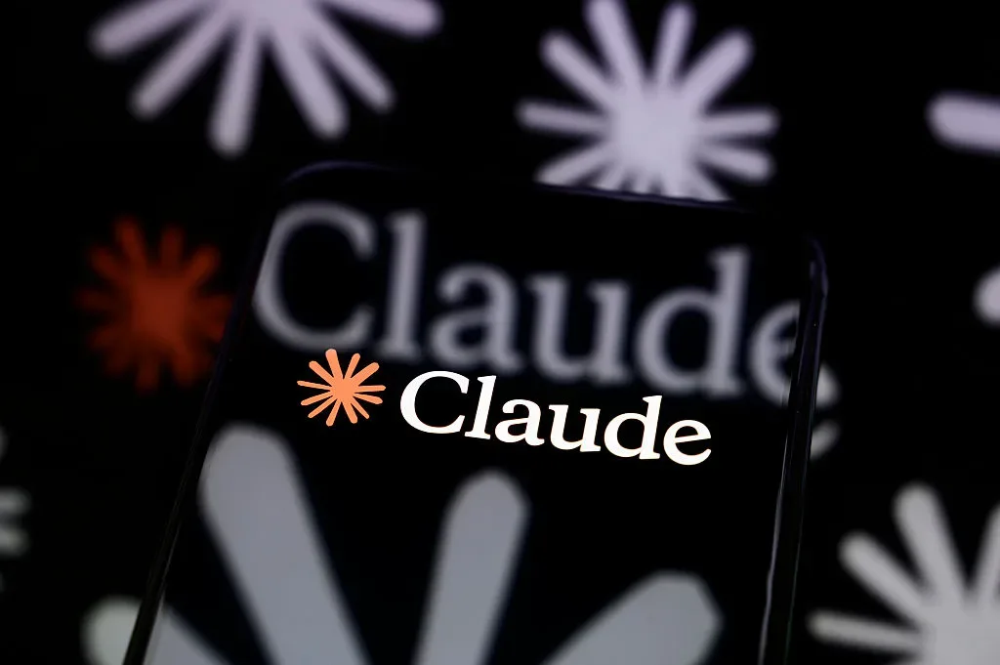
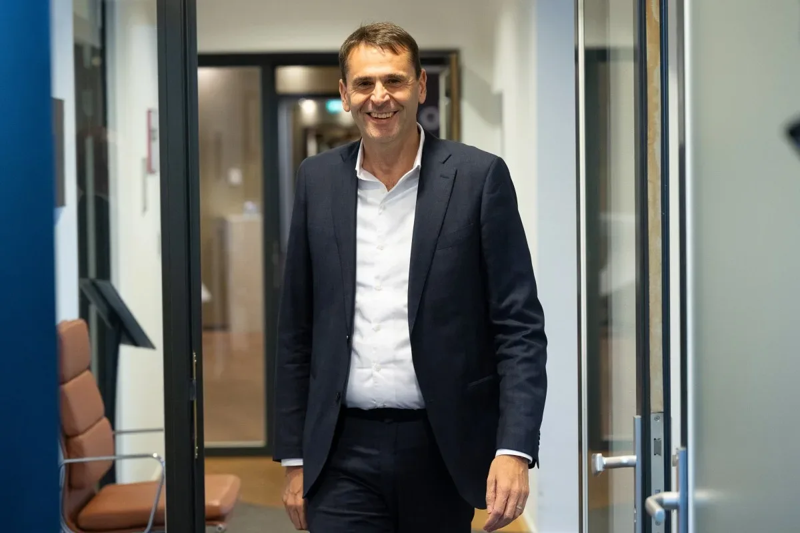
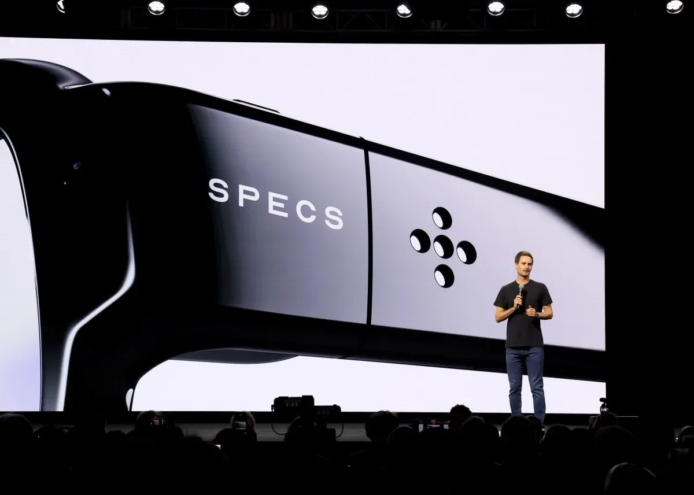
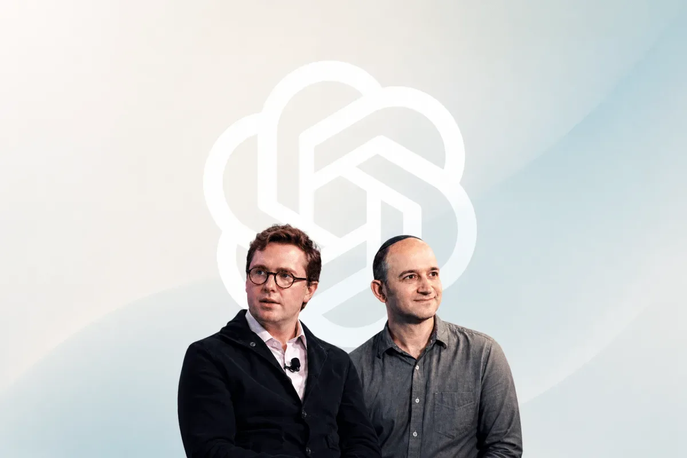

Индустрия
MoEngage поглощает Aampe: ставка на ИИ-агентов в маркетинге
MoEngage купила Aampe — стартап, внедряющий ИИ-агентов для персонализации маркетинга
TechCrunch AI
24 июн. 2026 г.Материалы из источника TechCrunch AI.
104 материалов
MoEngage купила Aampe — стартап, внедряющий ИИ-агентов для персонализации маркетинга

Claude Tag — это ИИ-помощник Anthropic, который постоянно находится в вашем Slack и запоминает контекст.

До 26 июня — early bird на конференцию для основателей. Скидка до $190.

Fika Jobs привлек $4 млн на платформу, где ИИ-агент проводит видеоинтервью с кандидатами, а работодатели смотрят их профили — как LinkedIn встречает TikTok.

Крупные технологические компании в 2026 году активно сокращают персонал, указывая на ИИ как на движущую силу — от Oracle до GitLab.

OpenAI с Trail of Bits помогут open-source мейнтейнерам чинить баги с помощью ИИ.

Создатель Claude Code объяснил, почему агентные петли — не хайп, а реальный следующий шаг эволюции ИИ.

Groq привлек $650 млн и переориентируется на облачный бизнес после потери ключевых сотрудников в пользу Nvidia.

Водный след ИИ-дата-центров не ограничивается охлаждением — Nvidia решает лишь часть проблемы.

Google DeepMind инвестирует $75 млн в A24 для совместной разработки ИИ-инструментов для кино. Подробности.

Amazon приглашает индийских пользователей протестировать Alexa+ на хинди.

Reflection ИИ платит $150 млн в месяц за доступ к чипам Nvidia GB300 через SpaceX

Скидка до $190 на билеты до 26 июня: TechCrunch Founder Summit 2026 в Бостоне

Anthropic сняла с производства модели Fable 5 и Mythos 5 из-за экспортного контроля — эксперты считают это чрезмерным.

Практические ИИ-функции iOS 27: разделение счета, обновление паролей, умные подсказки и контекст звонков

Мередит Уиттакер: ИИ-чатботы не сознательны, а Copilot в чатах — угроза приватности

Бывшие сотрудники OpenAI запустили In the Weights — сайт, показывающий, насколько хорошо языковые модели помнят пользователей без веб-поиска.

Нобелевский лауреат Джон Джампер покинул DeepMind и перешёл в Anthropic — новый этап в гонке ИИ-талантов.
США впервые применили экспортные ограничения к мощным ИИ-моделям — на примере Anthropic и её продуктов Mythos и Fable.

Правительство США заставило Anthropic отозвать Fable 5 и Mythos 5 — что это значит для безопасности и IPO?

США запретили Anthropic выпуск моделей Fable 5. Почему это может ускорить IPO?
Reliance Industries встраивает ИИ в каждый звонок, приложение и дом — с Jio Call Agent, TeleFrame и новыми ИИ-сервисами.
ИИ-стартап с $100 млн и без сотрудников: бывший производитель обуви Allbirds запускает Smartbird

США подозревают ASML в тайной поставке ключевого оборудования для чипов ИИ в Китай. Компания опровергает.
Elastic покупает ИИ-стартап для автоматизации отладки кода за $85 млн

Стартап Baseten поднял оценку с $5 до $13 млрд за пять месяцев — инвесторы ставят на инференс

Snap выделяет ИИ-команду в Dotmo: игры, генеративное видео и личные деньги CTO

Соавтор Transformer и советник Трампа по ИИ переходят в OpenAI накануне IPO
Match Group выяснила, как одинокие американцы относятся к ИИ в свиданиях: 47% против, но 64% допускают помощь.
Amazon готовится напрямую конкурировать с Nvidia, предлагая собственные ИИ-чипы Trainium сторонним заказчикам.